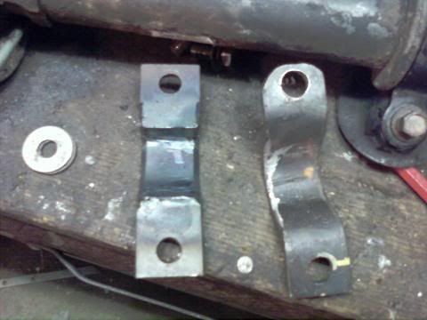

-
i can confirm that my MFP rack bushings, even with the right bracket, had about a 1/8 of play or so with the wheels on the ground.
i made a thread about it a long time ago. I think I fixed it though, so I never changed the bushings back. I can't remember what I did.
It wasn't an issue when I installed my 2nd rebuilt steering rack.
so it's not just the S13 urethane bushings. It seems like all of them have no squishy compliance to hug the brackets properly. -
Hmmm....thanks for the info guys, I'll have to look into a solution over the next few weeks. I haven't even visited the car in over a month since I brought the engine home.Usual Z31 suspect: Garage Queen (aka broken)

-
Are you watching the rack move an 1/8th inch or are you talking steering wheel playDD:
86 Black Turbo 5spd
The Fallen:
84 red n/a auto Slicktop, 86 Black 2+2 n/a 5spd
Parting Currently:
86 White Turbo 5spd, 88 n/a 5spd, 84 AE, 88 Shiro #64
Garage Sale -
Agreed that poly doesn't grip as rubber would. I need to weld lateral bars underneath the brackets. Good idea. -
Wouldn't you be able to just roughen up the surface on the Poly bushings somehow? Maybe I'll just get new rubber bushings.Usual Z31 suspect: Garage Queen (aka broken)
-
First read the instructions.
www.garymolitor.com/300zx/SRB-Information1.pdf
This will not work on the Z31
-
So basically just find a 15/16" hold down bracket? Will the s13 one bolt down?Usual Z31 suspect: Garage Queen (aka broken)
-
BTW, that was after I widened the strap by building it up with weld. Also built up the inside to grip the bushings and get a tighter fit. Still didn't work.
Guys go ga-ga over getting poly EVERYTHING for their cars. This bushing is meant more to grip the rack, not dampen vibration.sigpic -
Yes to the wider bracket. S13 drivers' side brackets are shorter if I recall, that's why the bushing is a bit smaller on that side.1984 Hardtop Z31NA2T: Angrily decomposing due to lack of motivation
1986 Z31NA: Dead and gone -
Clean the poly and "degrease" it before putting it on, and clean the rack of gunk and PS fluid/oil. No problems what so ever from mine. Been on for 2 years and driven in anger around Road Atlanta and no movement from the rack.
1986 300ZX Turbo…sold
1990 Skyline GT-R…new money pit
2014 Juke Nismo RS 6-speed…daily -
i have had this problem with the poly and stock bushings.Every thing i have tryed did not stop it form moving. the stock ones where better than the poly but still not good . i ended up making solid mounts for the driverside and used the poly on the passenger side. then i glued them in with window weld.Butter;324096 wrote: BTW, that was after I widened the strap by building it up with weld. Also built up the inside to grip the bushings and get a tighter fit. Still didn't work.
Guys go ga-ga over getting poly EVERYTHING for their cars. This bushing is meant more to grip the rack, not dampen vibration.

 86na2t + holset
86na2t + holset
feedback
viewtopic.php?f=18&t=6114&hilit=andrew+gardner -
My god, maybe I'll just see if i have any movement in my steering shaft and leave it how it is if not.Usual Z31 suspect: Garage Queen (aka broken)
-
86na2t + holset
feedback
viewtopic.php?f=18&t=6114&hilit=andrew+gardner -
yeah there has to be something that will fix this.
with the poly bushings it's worse. that movement is not "squishy", it's more of a knock from side to side.
i guess urethane adhesive would work. -
stick your head under there and have someone tug on the wheel when they are on the ground, or see if you can peek at it from the top. guaranteed you'll see movement that you didn't know was there. maybe that means it doesn't matter- but I like bushings to act like bushings, personally. lol.NissanEgg;324110 wrote: Clean the poly and "degrease" it before putting it on, and clean the rack of gunk and PS fluid/oil. No problems what so ever from mine. Been on for 2 years and driven in anger around Road Atlanta and no movement from the rack.

Copyright © 2006–. All rights reserved. Privacy Policy